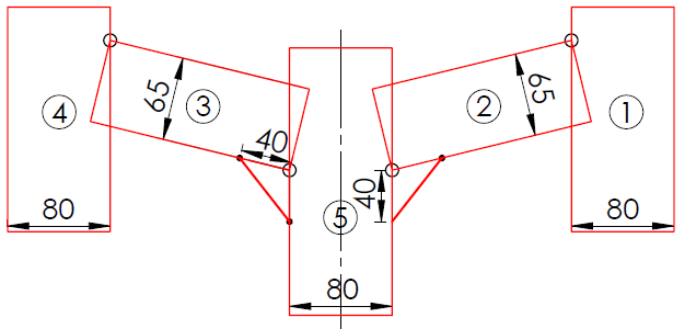
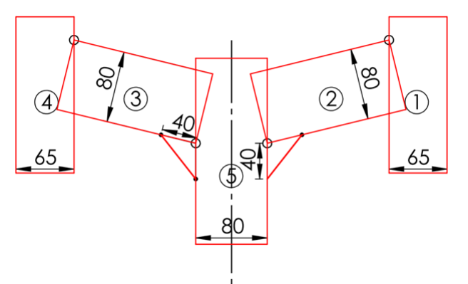
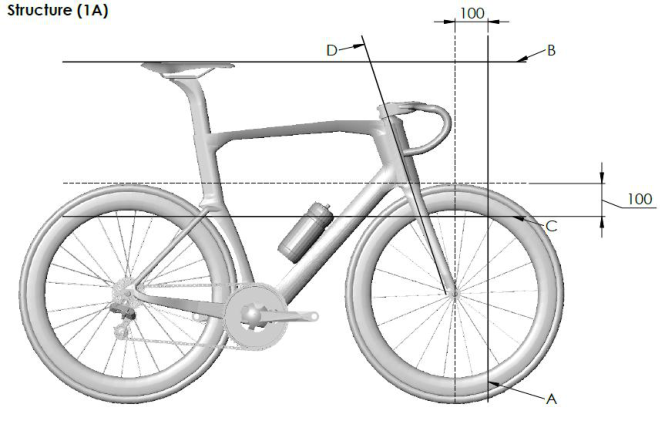
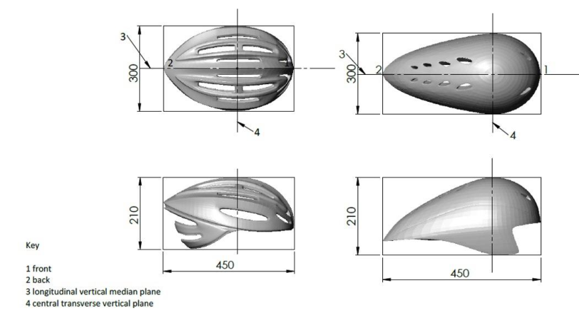

MEMORANDUM
06.10.2025
PART 1 GENERAL ORGANISATION OF CYCLING AS A SPORT
Rules amendments applying on 01.01.2027 Chapter III EQUIPMENT Section 1: general provisions
§ 1 Principles
1.3.001bis The UCI shall implement Approval Protocols setting out the process and requirements for the approval of specified items of equipment.
Each Approval Protocol shall define its scope of application by discipline and, where relevant, by class of event.
The Approval Protocols shall apply as follows:
- Frameset Approval Protocol: road, track, cyclo-cross;
- Wheel Approval Protocol: road, track, cyclo-cross;
- Helmet Approval Protocol: road, track, cyclo-cross;
- Prototype Equipment Approval Protocol: all disciplines;
- EPAC’s Drive Unit Approval Protocol: all disciplines.
Riders and teams shall be responsible for ensuring that any equipment used at an event complies with the requirements set out therein and is listed among the list of authorised equipment, as published by the UCI.
(article introduced on 01.01.11 and modified on 01.01.25, 01.01.27)
Section 2: bicycles
§ 2 Technical Specifications
1.3.022 In competitions other than those covered by article 1.3.023, only the traditional type of handlebars (see diagram «structure 1A») may be used. The handlebars must be positioned in an area defined as follows: above, by the horizontal plane of the point of support of the saddle (B); below, by the horizontal plane passing 100 mm below the highest point of the two wheels (these being of equal diameter) (C); at the rear by the axis of the steerer tube (D) and at the front by a vertical plane passing at horizontal distance of 100 mm from the axis of the front wheel spindle (see diagram «Structure (1A)»).
In addition, all handlebars must conform to the following:
- The maximum dimension of the cross section of the handlebars is 80 / 65 mm for track and 65 / 80 mm for road and cyclo-cross (see diagram «structure 1.0 Track» and «structure 1.0 Road, Cyclo-cross»)
Structure (1.0) Track
Structure (1.0) Road, Cyclo-cross
-
The maximum dimension of the cross section of the stem is 80 mm
-
The minimum dimension of the cross section of all fork accessories is 10 mm
-
Two isosceles compensation triangles with two 40 mm sides are authorised at the joints between the stem and the handlebars.
-
The minimum overall width of handlebars, measured from outside to outside, is 400 mm for road and cyclo-cross, and 350 mm for track
-
The maximum dimension from the external extremity of the handlebar and the internal extremity of the same side of the handlebar shall not exceed 65 mm for road and cyclo-cross, and 80 mm for track (see diagram «structure 1»).



Structure (1)
The brake controls attached to the handlebars shall consist of two supports with levers. It must be possible to operate the brakes by pulling on the levers with the hands on the lever supports in a safe manner. The maximum inclination of brake levers shall be 10° and the minimum measurement between the inside of the extremities of the brake levers shall be 280 mm. Any extension to or reconfiguration of the supports to enable an alternative use is prohibited. A combined system of brake and gear controls is authorised.
Structure (1A)
(text modified on 01.01.05; 01.02.12; 01.11.14; 01.01.23; 01.04.24; 01.01.26; 01.01.27)

Section 3: riders’ clothing§ 1 General Provisions
1.3.031 1. Wearing a rigid safety helmet shall be mandatory during competitions and official training sessions in all disciplines except indoor cycling and BMX Freestyle Flatland.
-
In all disciplines wearing a rigid safety helmet is recommended outside of competitions and official training sessions. In any case, legal provisions must be complied with.
-
Each rider shall be responsible for:
- ensuring that the helmet is approved in compliance with an official securitystandard and that the helmet can be identified as approved;
- wearing the helmet in accordance with the security regulations in order toensure full protection, including but not limited to a correct adjustment on the head as well as a correct adjustment of the chin strap;
- avoiding any manipulation which could compromise the protectivecharacteristics of the helmet and not wearing a helmet which has been undergone manipulation or an incident which might have compromised its protective characteristics;
- using only an approved helmet that has not suffered any accident orshock;
- using only a helmet that has not been altered or had any element addedor removed in terms of design or form;
- using only accessories approved by the helmet manufacturer. -
The tables below set out requirements related to helmets in the disciplines of road, track and cyclo-cross.
The table below provides for two categories of helmets: Traditional Helmets and Time Trial Helmets. It also sets out the specifications for each category of helmet.
| Specifications | Traditional Helmet | Time Trial Helmet |
|---|---|---|
| Maximum dimensions (L x W x H) mm (as per diagram below) |
450 x 300 x 210 | 450 x 300 x 210 |
| Ventilation | The helmet must have at least three (3) distinct air inlet openings on the shell structure |
No restriction |
| Ear coverage | The helmet shell and any accessories must not extend to cover, obstruct, or enclose the rider’s ears (looking from the lateral view) |
No restriction |
| Visor A “visor” refers to any fixed or attached shield that cannot be worn independently of the helmet. |
Integrated or detachable visors are not permitted. Helmets must be used without any visor attachments or shield-like accessories |
Integrated or detachable visors are permitted |
The table below sets out the disciplines in which Traditional Helmets and Time Trial Helmets are permitted.
| Road | Traditional Helmet | Time Trial Helmet |
|---|---|---|
| Individual Time trial, Team Trime Trial |
Permitted | Permitted |
| Other events | Permitted | Not permitted |
| Track | Traditional Helmet | Time Trial Helmet |
| Individual Pursuit, Team pursuit, Kilometer Time trial, Team Sprint, 200m Time Trial |
Permitted | Permitted |
| Sprint, Points Race, Keirin, Madison, Scratch Race, Elimination Race, Omnium, Tempo Race |
Permitted | Not permitted |
| Other events | Permitted | Not permitted |
| Cyclo-cross | Traditional Helmet | Time Trial Helmet |
| All events | Permitted | Not permitted |
The diagram below illustrates the measurement of dimensions for Traditional Helmets and Time Trial Helmets:
(text modified on 05.05.03; 01.01.04; 01.08.04; 01.01.05; 01.02.07; 01.07.11; 01.01.15; 01.01.17; 27.03.17; 01.01.23; 01.01.26; 01.01.27)
